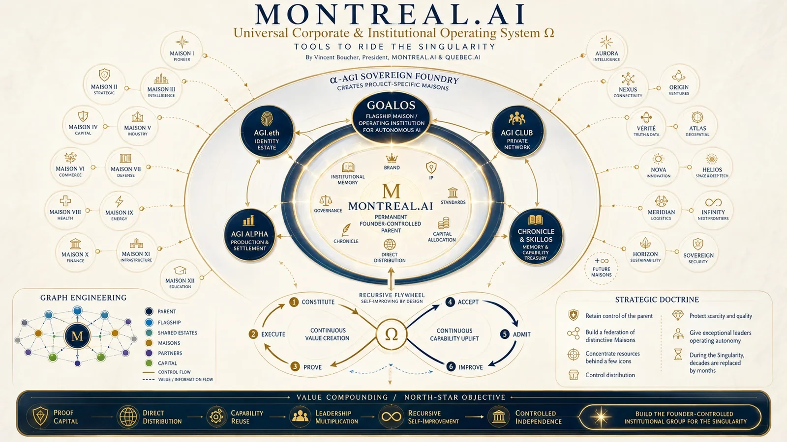

Exécuter
AgentProduit un travail borné; ne s’auto-accepte pas.
Principe
Fondée à Montréal · 2003 · Contrôle fondateur
Une constitution. Plusieurs Maisons. Une autorité souveraine.
Le parent conserve la marque, la propriété intellectuelle, les normes, la distribution, l’allocation du capital et la mémoire. Les Maisons reçoivent l’autonomie d’opérer, jamais le pouvoir de diluer la constitution.
Pendant la Singularité, les décennies sont exécutées en mois.
Doctrine du parent
La structure concentre les ressources derrière quelques icônes tout en permettant à de nombreuses Maisons propres aux projets, secteurs et territoires d’émerger sous une constitution commune.
La société mère demeure sous contrôle fondateur et ne concède ni propriété ni contrôle par défaut.
Ouvrir →✦02GoalOS et quelques institutions phares reçoivent les ressources requises pour définir leur catégorie.
Ouvrir →◇03Les dirigeants exceptionnels opèrent librement à l’intérieur de droits, budgets, risques et normes explicites.
Ouvrir →▤04Aucune sortie non validée n’entre dans la mémoire institutionnelle ou n’obtient l’autorité de se propager.
Ouvrir →Architecture des droits
L’architecture sépare Exécuter, Valider, Accepter, Admettre et Régler. La chaîne peut prouver ce qui a été engagé; elle ne peut pas, seule, prouver qu’un événement hors chaîne était vrai.
Produit un travail borné; ne s’auto-accepte pas.
PrincipeTeste les affirmations avec contexte frais et preuves indépendantes.
PrincipeDécide ce qui peut être utilisé dans le monde réel.
PrincipeDécide ce qui mérite la mémoire et la réutilisation.
PrincipeDéplace la valeur uniquement lorsque les conditions sont satisfaites.
PrincipeLa mission, l’autorité, la preuve, la mémoire et le capital restent alignés au niveau de l’institution mère.